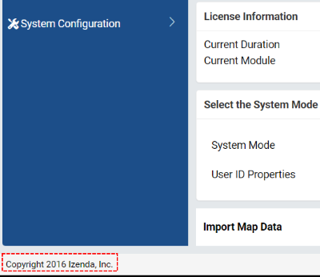
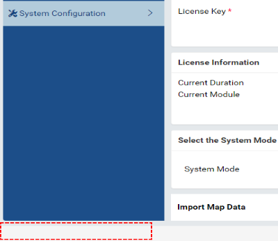

White-Labeling Izenda¶
CSS Overrides¶
Most white-labeling can be accomplished via CSS overrides in a custom css file.
Creating the custom CSS file¶
Create a new CSS file “customizations.css”.
Deploy the file to the web front-end.
Edit the index.html file to include the new CSS file as shown below at line 21.
1 2 3 4 5 6 7 8 9 10 11 12 13 14 15 16 17 18 19 20 21 22 23 24 25 26 27 28 29 30 31 32 33 34 35 36 37 38 39
<!DOCTYPE html> <html> <head> <title>Izenda BI Platform</title> <meta http-equiv="Content-Type" content="text/html; charset=UTF-8" /> <meta http-equiv="X-UA-Compatible" content="IE=edge,chrome=1"> <meta content='width=device-width, initial-scale=1.0, maximum-scale=1.0, user-scalable=0' name='viewport' /> <style> .container { width: 100%; height: 100vh; min-height: 100vh; } @media print { .container { height: auto; min-height: inherit; } } </style> <link rel="shortcut icon" href="/favicon.png"> <link href="/izenda-ui.css?1c44f40f9366b0787b1f" rel="stylesheet"> <link href="/customizations.css" rel="stylesheet"> </head> <body> <div class="container" id="izenda-root"></div> <script type="text/javascript" src="/izenda_common.js?1c44f40f9366b0787b1f"></script> <script type="text/javascript" src="/izenda_config.js?1c44f40f9366b0787b1f"></script> <script type="text/javascript" src="/izenda_locales.js?1c44f40f9366b0787b1f"></script> <script type="text/javascript" src="/izenda_vendors.js?1c44f40f9366b0787b1f"></script> <script type="text/javascript" src="/izenda_ui.js?1c44f40f9366b0787b1f"></script> </body> </html>
Save the changes and optionally restart the front-end site.
Common Examples¶
Removing the Izenda Copyright notice¶
Update the customizations.css file to include the CSS below:
1 2 3
.izenda-Footer .izenda-Footer-copyright { visibility: hidden; }
Before:

After:

Removing the Izenda help icon¶
Update the customizations.css file to include the CSS below:
1 2 3
.icon-help-circled:before { visibility: hidden; }